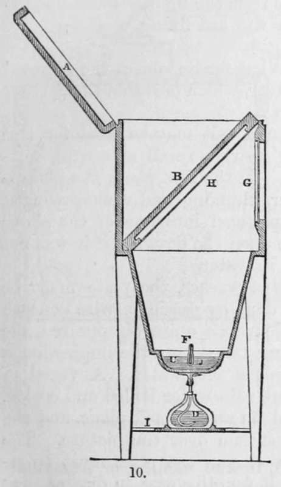
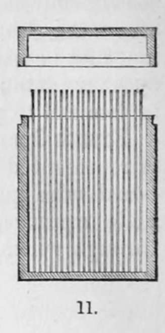

The Original Process Of Daguerre. Part 3
Description
This section is from the book "A Manual Of Photography", by Robert Hunt. Also available from Amazon: A Manual of Photography.
The Original Process Of Daguerre. Part 3
Fourth Operation
The apparatus required in this operation is represented by fig. 10. a, is the lid of the box; b, a black board with grooves to receive the plate; c, cup containing a little mercury, j ; d, spirit - lamp ; f, thermometer ; g, glass through which to inspect the operation ; h, tablet as removed from the camera; I, stand for the spirit-lamp. All the interior of this apparatus should be covered with hard black varnish. The board and the affixed plate being withdrawn from the camera, are placed at an angle of about 45° within this box—the tablet with the picture downwards, so that it may be seen through, the glass g. The box being carefully closed, the spirit-lamp is to be lighted and placed under the cup containing the mercury. The heat is to be applied until the thermometer, the bulb of which is covered with the mercury, indicates a temperature of 60° centigrade (140° Fah.) The lamp is then withdrawn, and if the thermometer has risen rapidly, it will continue to rise without the aid of the lamp; but the elevation ought not to be allowed to exceed 75° cent. (167° Fah).
After a few minutes, the image of nature impressed, but till now invisible, on the plate, begins to appear ; the operator assures himself of the progress of this development by examining the picture through the glass, g, by a taper, taking care that the rays do not fall too strongly on the plate, and injure the nascent images. The operation is continued till the thermometer sinks to 45° cent. (113° Fah.) When the objects have been strongly illuminated, or when the plate has been kept in the camera too long, it wall be found that this operation is completed before the thermometer has fallen to 55° cent. (131° Fah.) This is, however, always known by observing the sketch through the glass.
After each operation the apparatus is carefully cleaned in every part, and in particular the strips of metal which hold the plate are well rubbed with pumice and water, to remove the adhering mercury and iodine. The plate may now be deposited in the grooved box (fig. 11), in which it may be kept, excluded from the light, until it is convenient to perform the last fixing operation.
Fifth Operation
This process has for its object the removal of the iodine from the plate of silver, which prevents the further action of the light.
A saturated solution of common salt may be used for this purpose, but it does not answer nearly so well as a weak solution of the hyposulphite of soda. In the first place, the plate is to be placed in a trough of water, plunging and withdrawing it immediately ; it is then to be plunged into one of the above saline solutions, which would act upon the drawing if it was not previously hardened by washing in water.
To assist the effect of the saline washes, the plate must be moved to and fro, which is best done by passing a wire beneath the plate. When the yellow colour has quite disappeared, the plate is lifted out, great care being taken that the impression is not touched, and it is again plunged into water. A vessel of warm distilled water, or very pure rain-water boiled and cooled, being provided, the plate is fixed on an inclined plane, and the water is poured in a continuous stream over the picture. The drops of water which may remain upon the plate must be removed by forcibly blowing upon it, for otherwise, in drying, they would leave stains on the drawings. This finishes the drawing, and it only remains to preserve the silver from tarnishing and from dust.
The shadows in the Daguerreotype pictures are represented by the polished surface of the silver, and the lights by the adhering mercury, which will not bear the slightest rubbing. To preserve these sketches, they must be placed in cases of pasteboard, with a glass over them, and then framed in wood, They are now unalterable by the sun's light.
The same plate may be employed for many successive trials, provided the silver be not polished through to the copper. It is very important, after each trial, that the mercury be removed immediately by polishing with pumice-powder and oil. If this be neglected, the mercury finally adheres to the silver, and good drawings cannot be obtained if this amalgam is present.
Continue to:
- prev: The Original Process Of Daguerre. Part 2
- Table of Contents
- next: Section II. Improvements In Daguerreotype